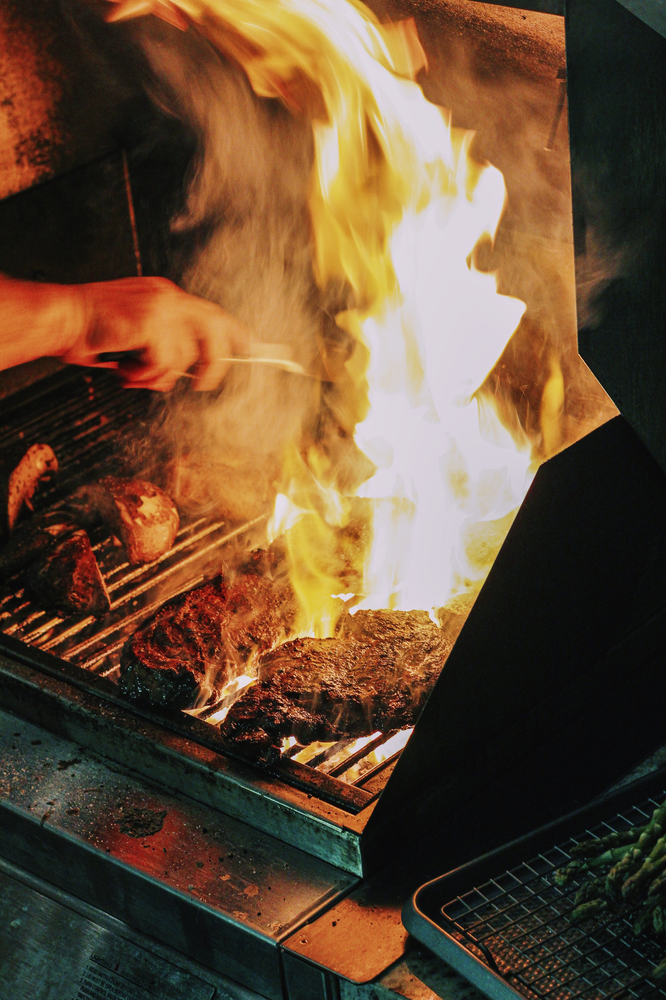
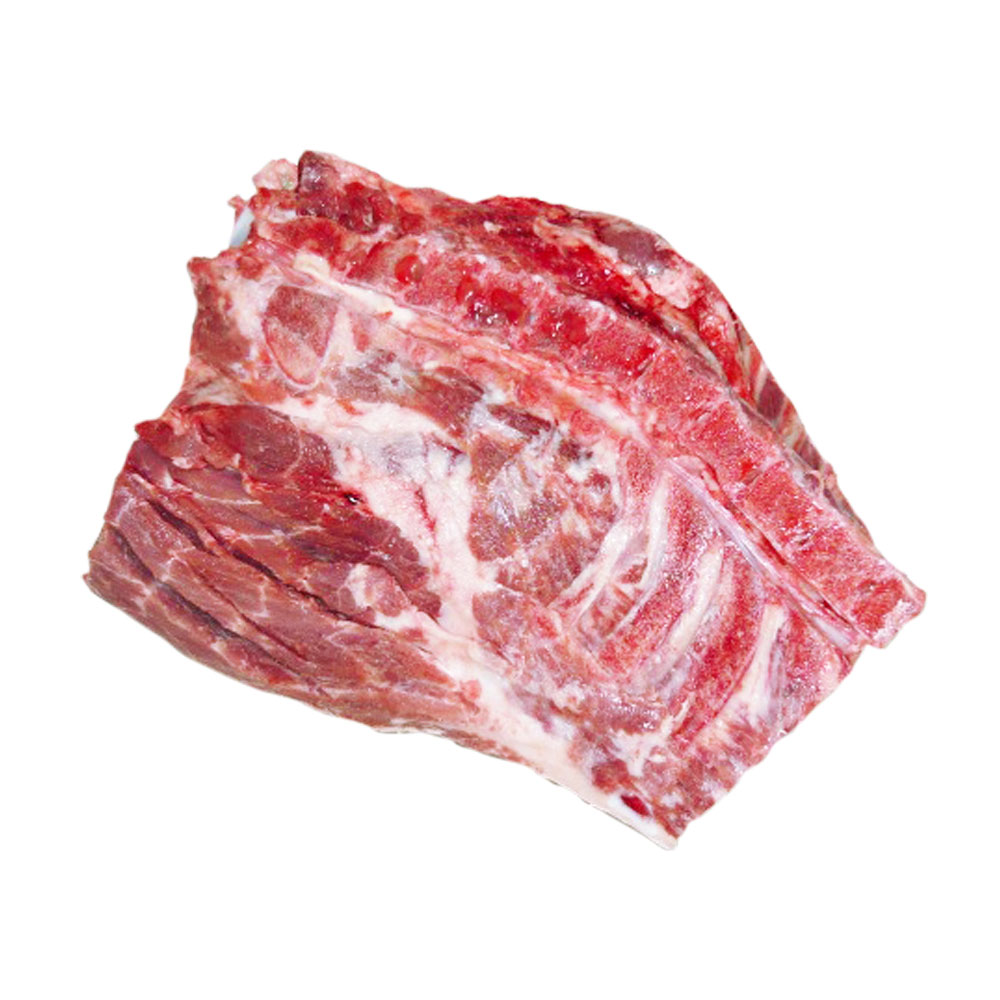

Smakowita Karkówka: Marynata i Smażenie
Karkówka to jedno z najbardziej popularnych mięs, które świetnie nadaje się do grillowania. Aby uzyskać jeszcze lepszy smak, warto zastosować aromatyczną marynatę. W tym artykule podzielimy się z Tobą przepisem na pyszną marynatę do karkówki oraz kilkoma praktycznymi poradami, jak perfekcyjnie usmażyć to mięso.
Przepis na Marynatę do Karkówki
Składniki:
- 1/4 szklanki oleju rzepakowego
- 3 łyżki sosu sojowego
- 2 łyżki miodu
- 3 ząbki czosnku, posiekane
- 1 łyżeczka suszonego tymianku
- 1 łyżeczka papryki wędzonej
- Sól i pieprz do smaku
Przygotowanie Marynaty:
- W misce wymieszaj olej rzepakowy, sos sojowy, miód, posiekany czosnek, tymianek, paprykę wędzoną oraz sól i pieprz. Mieszaj, aż wszystkie składniki dobrze się połączą.
- Umieść karkówkę w płaskiej misce lub worku spożywczym, a następnie wylej przygotowaną marynatę na mięso. Upewnij się, że karkówka jest całkowicie pokryta marynatą ze wszystkich stron.
- Zamknij naczynie lub worek i umieść w lodówce na co najmniej 4 godziny lub najlepiej przez całą noc, aby mięso dobrze nasączyło się smakami marynaty.

Smażenie Perfekcyjnej Karkówki
Porady na udane smażenie:
- Wyjmij karkówkę z lodówki i pozostaw na chwilę na pokojowej temperaturze przed smażeniem. To pozwoli na równomierne przysmażenie mięsa.
- Rozgrzej grill lub patelnię do średniej wysokiej temperatury.
- Usmaż karkówkę przez około 15-20 minut, często obracając, aż osiągnie odpowiednią temperaturę wewnętrzną (ok. 65°C dla mięsa średnio wysmażonego).
- W trakcie smażenia możesz używać pozostałej marynaty do skraplania mięsa, co dodatkowo wzmocni smak.
- Po usmażeniu pozwól karkówce odpocząć przez kilka minut przed pokrojeniem. To pozwoli na zatrzymanie soków w mięsie.

Teraz masz wszystko, co potrzebne, aby przygotować pyszną marynatę do karkówki i smażyć ją w doskonały sposób. Smacznego grillowania!
Powrót na Stronę Główną